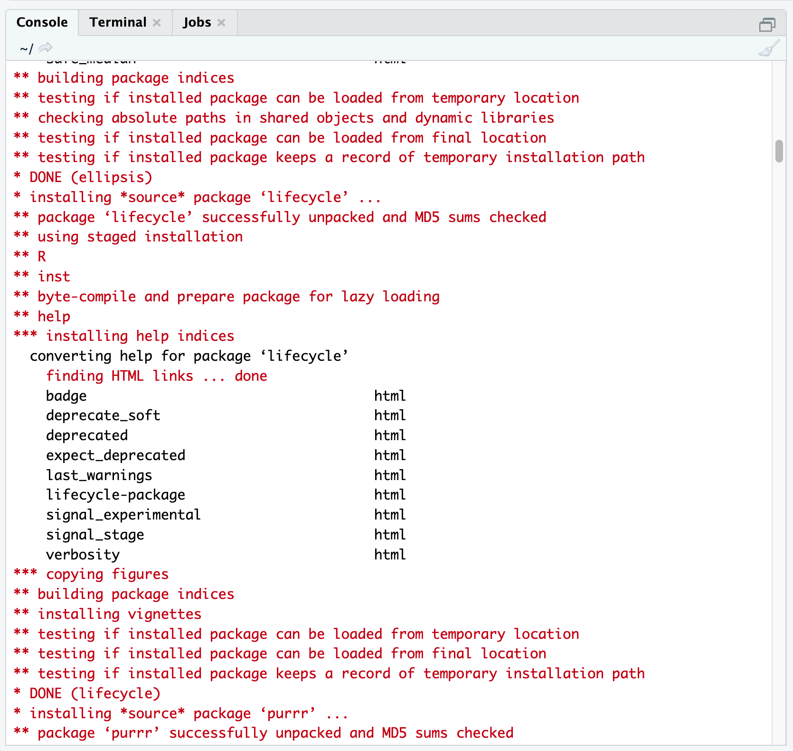
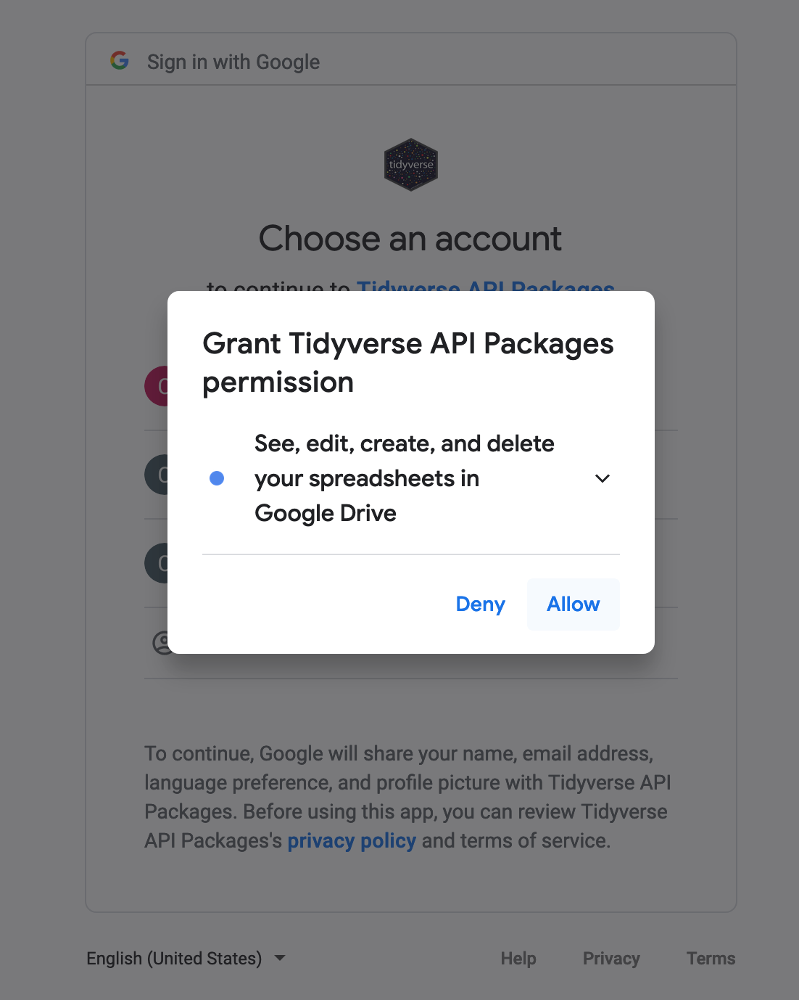
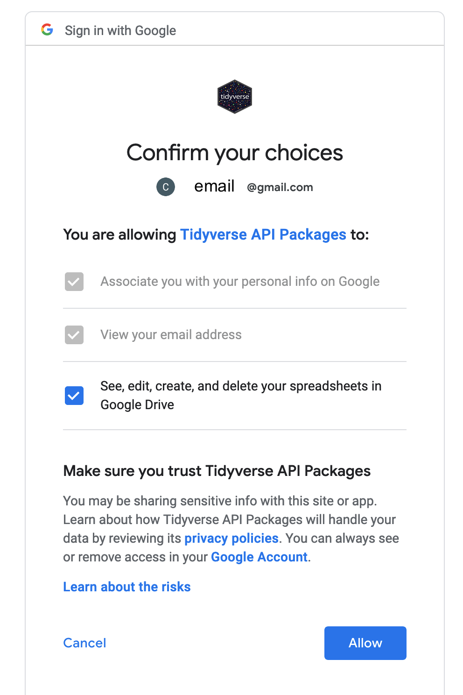
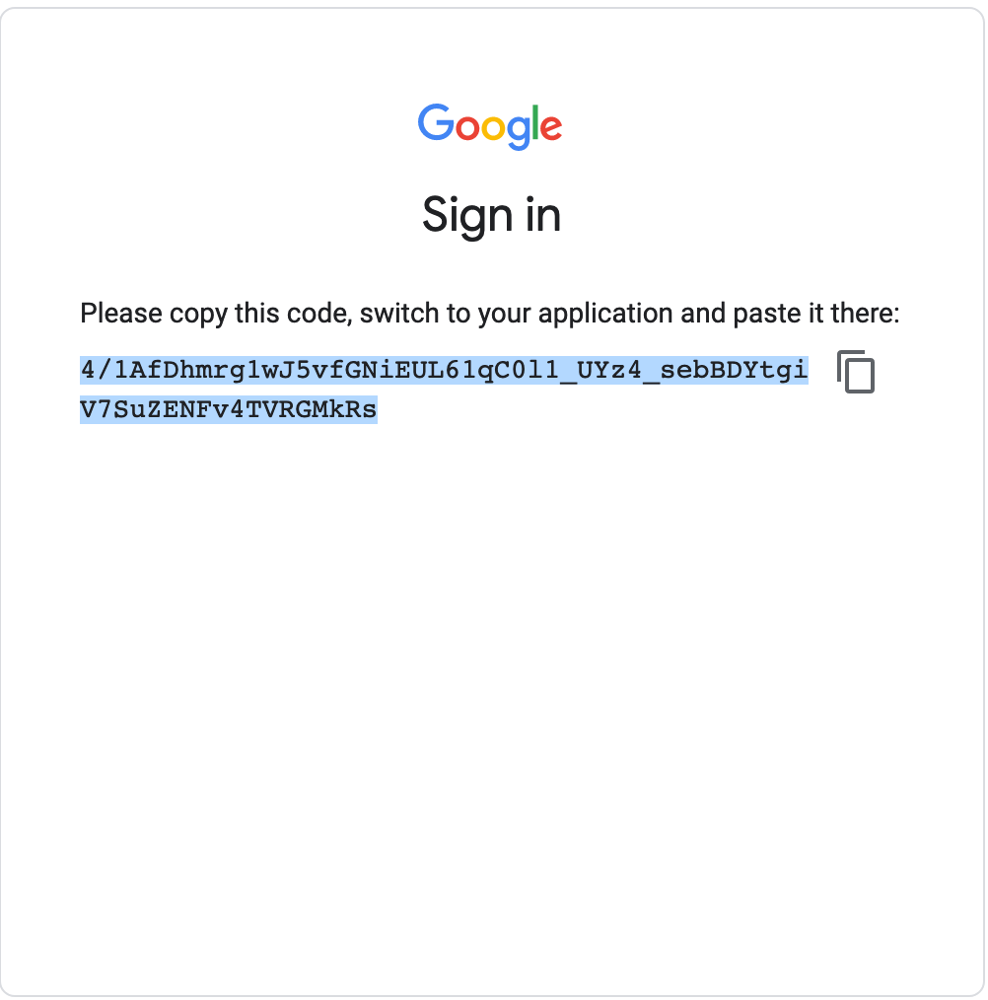
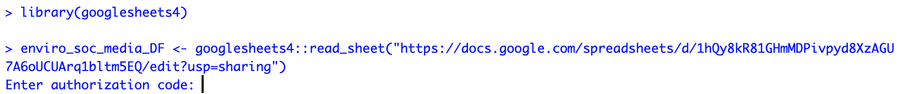

Interacting with Googlesheets in RStudio
2021-06-15
Installing the package
Note that the code here only needs to be run ONCE. Once you have installed a package, you do not need to re-install it.
I recommend running these lines of code in the Console which always has the > symbol to take in a command).
install.packages("googlesheets4")You will see something like this - don’t be alarmed by the red text!

Setting up the Googlesheets4 package
This workflow also only needs to be done ONCE. The first time you interact with a Google sheet using the googlesheets4 Application Programming Interface (API) wrapper, it will ask you about permissions to store your credentials (account information). You can run these commands in the console.
The workflow is below:
- Read in an example Google sheet, which will launch an initial query about what Google account you’d like to associate with the package:
enviro_soc_media_DF <- googlesheets4::read_sheet("https://docs.google.com/spreadsheets/d/1hQy8kR81GHmMDPivpyd8XzAGU7A6oUCUArq1bltm5EQ/edit?usp=sharing")- At the same time, another tab will open in your internet browser on your computer, displaying a window that asks you to select which of your Google account(s) to grant access to in
RStudio Serverusing thegooglesheets4package.

- Select
Allow. Next, you will see:

- Select
Allowagain. This will produce an authorization code that you will then copy and paste into yourRStudiosession. You can copy the code by pressing the button to the right of the authentication code.

- Next, navigate back to the internet browser tab running
RStudio Server. You will paste the code in response to theEnter authorization codeprompt waiting in the console.

Copy the authorization code into the blank space next to
Enter authorization code.Once you paste the code in, you will see this type of successful response, showing you that the authentication has worked and the
read_sheetfunctiongooglesheets4will return:

Great work! You have successfully authenticated access to your Google account in your
RStudio Serveruser workspace.Going forward, even if you switch sessions, restart your session, or open a new session in XSEDE On Demand’s
RStudio Server, you shouldn’t need to re-authenticate access to Google. Instead, your credentials will be stored in a cached file.
Using Googlesheets4 to interact with your Google sheets data
The code below can be copied into the text editor pane (top left hand side) and saved as an R script or RMarkdown file. If you haven’t use RMarkdown before, I recommend using the R script format.
library("googlesheets4") # load package into workspace
myDF <- googlesheets4::read_sheet("SHARING LINK - replace with your link",sheet=2) # change this as neededTo run this code, you will need to generate a sharing link for your Google sheet. You will also need to know which sheet you want to pull in. The default is the first tab (e.g. sheet=1 above). You may get error messages - that is no problem. Post them to the appropriate Slack channel in the lab workspace. Most errors will arise with issues with how the data is formatted.
When you start a new RStudio session, the first time in that session that you use Googlesheets4, you may see this query:

You can proceed by selecting 1 for the default account. Or if you’d like to use a different Google account, you can type in 0 then go through the steps to link a Google account that I describe above.